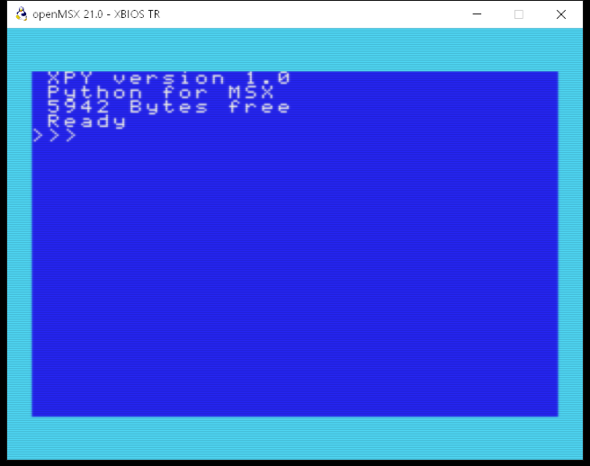
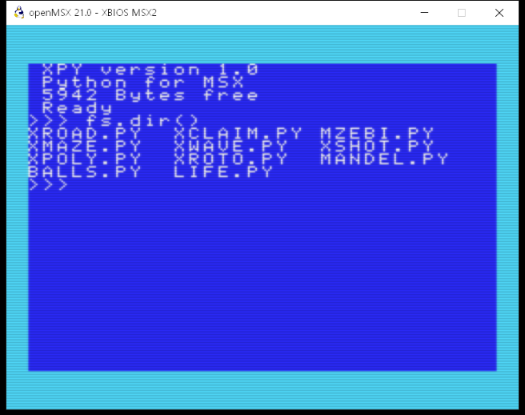
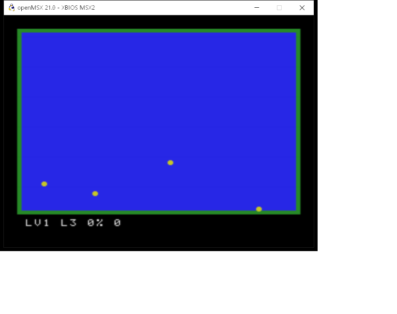
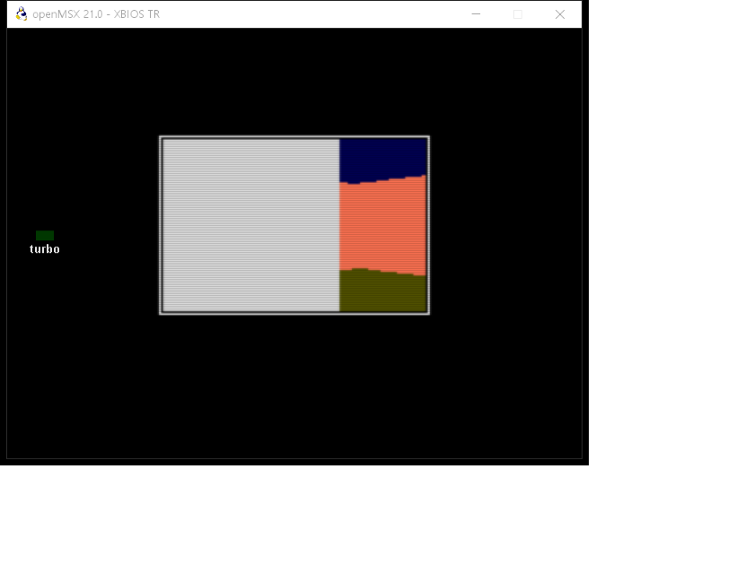
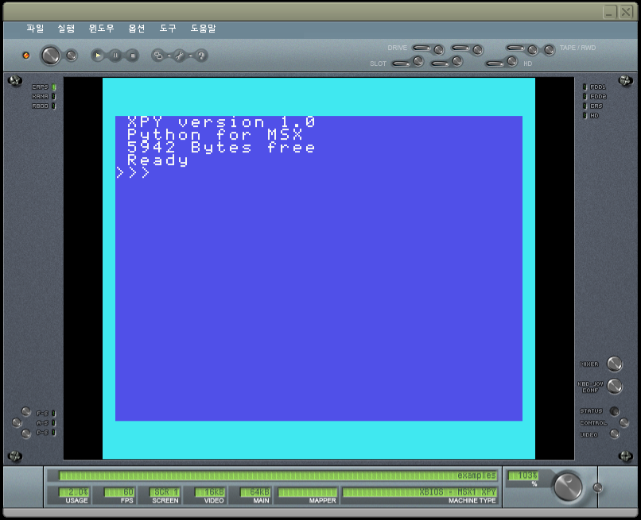
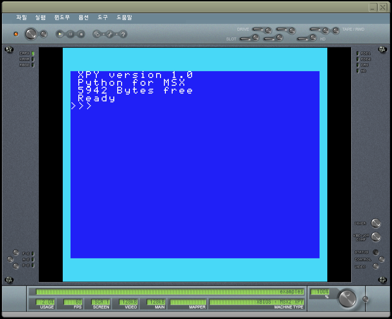
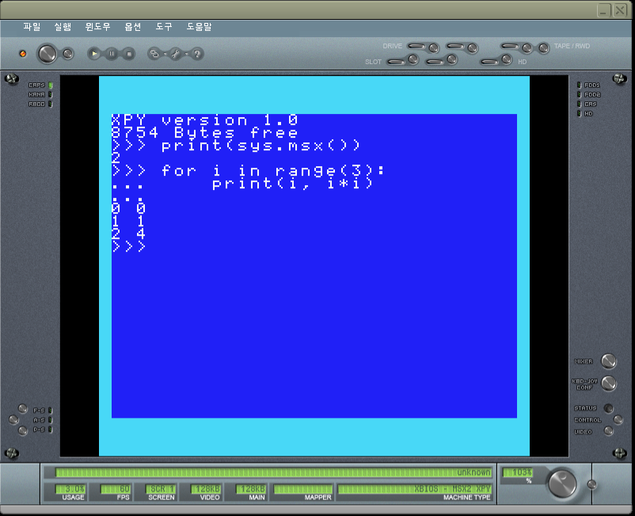
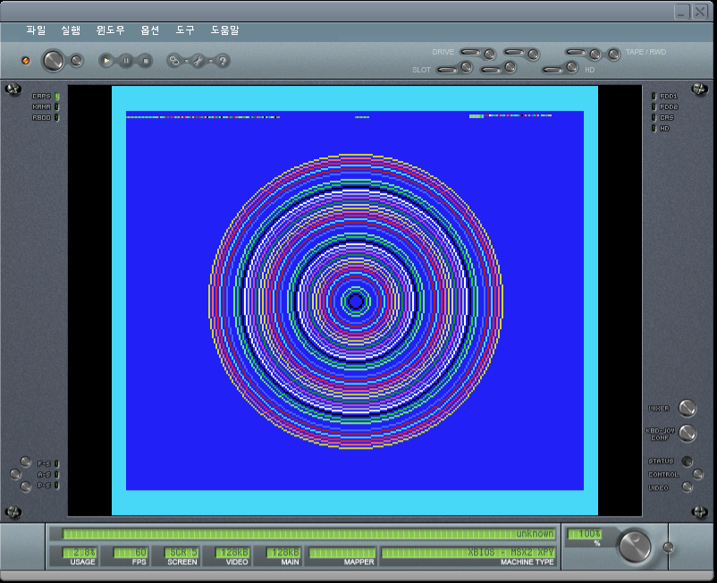
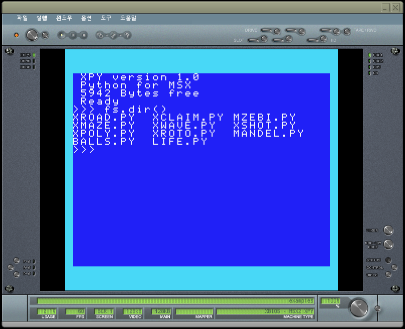
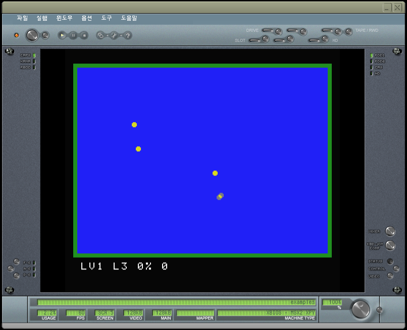

XBIOS 설치하고 실행하기
openMSX 또는 blueMSX 에서 XBIOS 를 실행하는 방법입니다.
준비
- 릴리스 페이지에서
xbios-1.0.zip을 받아 원하는 곳에 압축을 풉니다. 필요한 것은 그 안의dist/폴더입니다. - 에뮬레이터를 설치합니다.
- openMSX — openmsx.org (Windows · macOS · Linux)
- blueMSX 2.8.2 (Windows)
- Windows 에서는
dist/install.bat을 실행하면 이 PC 의 openMSX 와 blueMSX 를 찾아 기계 구성을 등록합니다. 이 경우 아래의 「기계 구성 넣기」는 건너뜁니다. blueMSX 를 찾지 못하면install.bat "C:\blueMSX"처럼 폴더를 지정합니다.
openMSX
1. 기계 구성 넣기
- openMSX 의 사용자 폴더를 엽니다. Windows 에서는 보통 다음 위치입니다.
%USERPROFILE%\Documents\openMSX\share\machines
machines폴더가 없으면 만듭니다. - 받은 배포판의
dist/openmsx/안에 있는 파일 전부(.xml과.rom)를 그 폴더로 복사합니다. ROM 은 구성 파일과 같은 폴더에 있어야 합니다. - 예제 디스크
dist/examples.dsk는 원하는 곳에 둡니다.
| 세대 | XPY + 디스크 (권장) | XPY 만 | XBIOS 만 |
|---|---|---|---|
| MSX1 | XBIOS_1_XPY_DISK | XBIOS_1_XPY | XBIOS_1 |
| MSX2 | XBIOS_2_XPY_DISK | XBIOS_2_XPY | XBIOS_2 |
| MSX2+ | XBIOS_2P_XPY_DISK | XBIOS_2P_XPY | XBIOS_2P |
| turbo R | XBIOS_TR_XPY_DISK | XBIOS_TR_XPY | XBIOS_TR |
「XPY 만」은 디스크가 없고 메모리가 4KB 정도 더 큽니다. 「XBIOS 만」은 파이썬이 없습니다.
2. 켜기
명령줄에서 기계와 디스크를 지정해 켭니다.
openmsx -machine XBIOS_2_XPY_DISK -diska examples.dsk
Catapult 에서는 기계 목록에서 같은 이름을 고르고 디스크 드라이브 A 에 examples.dsk 를 넣습니다.

XBIOS_TR_XPY_DISK
3. 디스크의 프로그램 실행하기
fs.dir()
fs.load("XCLAIM.PY")


turbo R 의 예제(XMAZE.PY 등)는 XBIOS_TR_XPY_DISK 에서 실행합니다.

XBIOS_TR_XPY_DISK 에서 fs.load("XMAZE.PY") 를 실행한 화면.
blueMSX
1. 기계 구성 넣기
- blueMSX 를 설치한 폴더 안의
Machines폴더를 엽니다. - 받은 배포판의
dist/bluemsx/안에 있는 폴더 셋 —XBIOS 1 XPY·XBIOS 2 XPY·XBIOS 2+ XPY— 을 폴더째Machines안으로 복사합니다.
2. 켜기
blueMSX 의 메뉴 「옵션 → 에뮬레이션」(Options → Emulation)을 열어 기계 목록에서 XBIOS 2 XPY 등을 고르거나, 명령줄에서 지정합니다.
blueMSX.exe /machine "XBIOS 2 XPY" /diskA examples.dsk
세 기계 모두 디스크 드라이브가 달려 있습니다. /diskA 를 빼고 켠 뒤 메뉴 「파일 → 디스크 드라이브 A → 삽입」(File → Disk Drive A → Insert)으로 examples.dsk 를 넣어도 됩니다.


3. 프로그램 입력하기
블록은 들여쓰기로 쓰고 빈 줄로 끝냅니다.
for i in range(3):
print(i, i*i)
screen.mode(5)
for i in range(40):
screen.circle(128, 106, i*2+4, i%15+1)


4. 디스크의 프로그램 실행하기
openMSX 와 같습니다.
fs.dir()
fs.load("XCLAIM.PY")


blueMSX 에는 turbo R 기계가 없어서 turbo R 예제(XMAZE · XWAVE · XSHOT · XPOLY · XROTO)는 openMSX 에서 실행해 주십시오.
켜고 나서
| 입력 | 하는 일 |
|---|---|
fs.dir() | 디스크의 파일 목록을 한 줄에 셋씩 보기 |
fs.files() | 파일 이름을 리스트로 받기(프로그램 안에서) |
fs.load("이름.PY") | 디스크의 프로그램을 불러 실행 |
:list | 지금까지 입력한 프로그램 보기 |
:save 이름.PY · :load 이름.PY | 입력한 프로그램을 디스크에 저장 · 다시 불러오기 |
:run · :new | 입력한 프로그램을 처음부터 실행 · 지우기 |
게임은 키를 누르면 시작하고 ESC 로 끝납니다. B 는 자동 시연입니다.